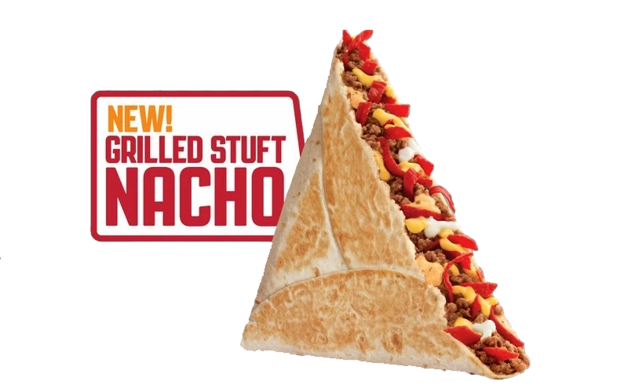
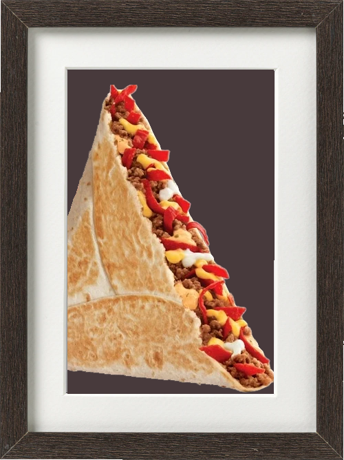

TACO BELL'S GRILLED STUFT NACHO

A promotional image from when the GSN was released in 2013
REASONS WHY THEY SHOULD BRING BACK THE GRILLED STUFT NACHO
- It was my favorite item at taco bell.
- It was objectively the best use of taco bell's ingredients.
- It was especially good when the protein was substituted with chicken.
- It had a really good sauce on it that I don't think they sell anymore.
- I miss it very much :(
Touching Haikus
Gold, cheesy nacho,
Wrapped in a warm tortilla,
Flavorful blessing.
Nacho cheese splendor,
Red strips dancing with sour cream,
A handheld delight.
Crispy shell of warmth,
Holding my sweet sustenance,
My heart bleeds for you.
Warm tortilla folds,
Cheesy beef, red strips embrace,
Nacho dreams fulfilled.
RIP My Beloved...

Grilled Stuft Nacho
2013 - 2015